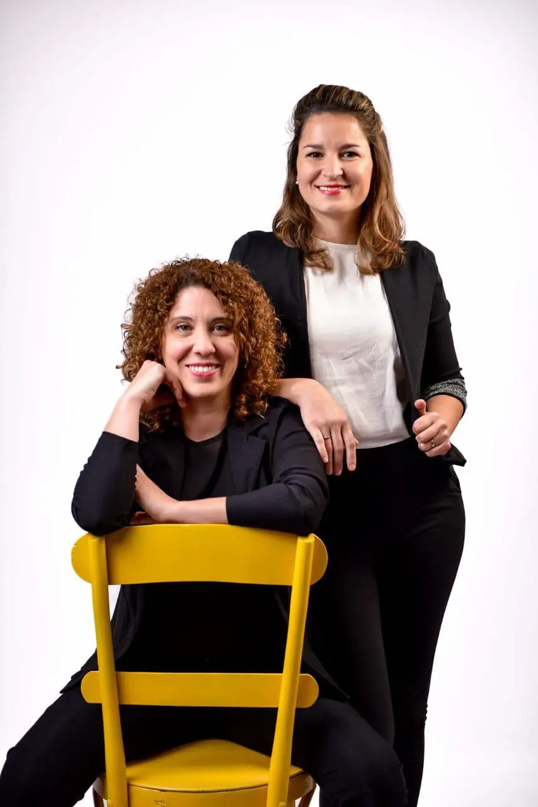

Acompañamos a personas, equipos y deportistas a lograr resultados reales, transformando su forma de pensar, sentir y actuar.
Quiero más informaciónAcompañamos procesos de trasformación profunda a travéz del coaching ontológico. No se trata solo de lograr objetivos... se trata de convertirte en la persona que puede sostenerlos.
Para quienes buscan claridad, bienestar y una vida con más sentido.
Ver proceso individualPara quienes buscan mejorar su comunicación, alinearse y potenciar sus resultados.
Explorar trabajo en equiposPersonas que ocupan roles de liderazgo y buscan mayor claridad estratégica.
Organizaciones que desean fortalecer comunicación y cohesión interna.
Procesos enfocados en mentalidad, rendimiento y gestión emocional.

Acompañamos a personas, líderes y equipos en momentos de cambio y crecimiento. Nuestra mirada integra profundidad, acción y compromiso real con cada proceso.
No trabajamos con soluciones rápidas. Trabajamos con procesos sostenidos que generan transformación auténtica.
“La transformación comienza cuando alguien se anima a mirar diferente.”Conocé nuestra historia
Conversemos y diseñemos un proceso a tu medida, alineado a tus objetivos.
Agendar una conversación